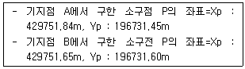
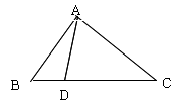
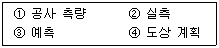

지적산업기사 (2005-08-07 기출문제)
1과목: 지적측량
1. 다음 중 일람도의 등재사항이 아닌 것은?
- 도면의 제명 및 축척
- 도곽선과 그 수치
- 지번 및 결번
- 주요 지형ㆍ지물의 표시
(정답률: 알수없음)

2. 축척 1/600에 등록된 토지의 면적이 70.65m2로 산출되었다. 지적공부에 등록하는 결정면적은?
- 70m2
- 70.6m2
- 70.7m2
- 71m2
(정답률: 알수없음)
3. 다음 중 지적세부측량의 시행 대상이 아닌 것은?
- 토지분할
- 신규등록
- 경계복원
- 지목변경
(정답률: 알수없음)
4. 지적도근측량의 1등 도선으로 할 수 없는 것은?
- 삼각점 상호간
- 지적삼각점 상호간
- 지적삼각보조점 상호간
- 지적도근점 상호간
(정답률: 알수없음)
5. 경위의측량방법에 의한 세부측량시의 거리측정단위로 옳은 것은?
- 0.1㎝
- 1㎝
- 5㎝
- 10㎝
(정답률: 알수없음)
6. 측판측량방법으로 거리를 측정할 때 도곽선의 길이에 몇 ㎜ 이상의 신축이 있으면 보정해야 하는가?
- 0.1㎜
- 0.3㎜
- 0.5㎜
- 0.7㎜
(정답률: 알수없음)
7. 지적삼각보조측량에 대한 설명으로 옳지 않은 것은?
- 교회망 또는 교점다각망으로 구성하여야 한다.
- 교회법에 의할 경우 2방향의 교회에 의한다.
- 다각망도선법에 의할 경우 3점 이상의 기지점을 포함한 결합다각방식에 의한다.
- 수평각 관측은 2대회의 방향관측법에 의한다.
(정답률: 알수없음)
8. 다음 중 지적도면에 직경 3㎜의 원으로 제도하고 원안은 검은색으로 채색하여 나타내는 지적측량기준점은?
- 지적삼각점
- 지적삼각보조점
- 지적위성기준점
- 지적도근점
(정답률: 알수없음)
9. 측량성과와 검사성과의 연결교차에 대한 허용범위의 기준으로 틀린 것은?
- 지적삼각보조점 : 0.25m 이내
- 기타지역내 지적도근점 : 0.20m 이내
- 경계점 좌표등록부 시행지역내 지적도근점 : 0.15m 이내
- 경계점 좌표등록부 시행지역내 경계점 : 0.10m 이내
(정답률: 알수없음)
10. 현행 지적측량에서 사용할 수 있는 면적측정 방법으로만 짝지어진 것은?
- 푸라니미터 사용법, 전자면적측정기 사용법
- 전자면저측정기 사용법, 좌표면적계산법
- 좌표면적계산법, 삼사법
- 삼사법, 푸라니미터 사용법
(정답률: 91%)
11. 도선법에 의하여 측판측량을 실시할 경우 다음 사항 중 옳지 않은 것은?
- 지적측량기준점 및 그밖에 명확한 기지점 간을 서로 연결한다.
- 도선의 측선장은 도상길이 8㎝ 이하로 한다.
- 도선의 변수는 25변 이하로 한다.
- 도선의 폐색 오차가 도상길이 ㎜ 이하인 때는 오차를 배분한다.
(정답률: 알수없음)
12. 지적삼각보조측량을 실시하여 아래와 같은 결과를 얻었다. 다음 중에서 옳은 것은?

- 연결교차가 0.50m 이하인 경우 그 평균치를 위치로 결정한다.
- 연결교차를 계산한 결과 0.15m 이다.
- 연결교차가 허용오차 범위내 이므로 결과를 사용할 수 있다.
- 소구점 P 의 좌표는 X : 429751.84, Y : 196731.45m 로 결정한다.
(정답률: 알수없음)
13. 지적도근측량에서 도선명에 대한 표기방법이 옳게 설명된 것은?
- 1등 도선은 가, 나, 다 순, 2등 도선은 ㄱ, ㄴ, ㄷ순으로 한다.
- 1등 도선은 가, 나, 다 순, 2등 도선은 (1), (2), (3) 순으로 한다.
- 1등 도선은 ㄱ, ㄴ, ㄷ순, 2등 도선은 가, 나, 다순으로 한다.
- 1등 도선은 (1), (2), (3)순, 2등 도선은 가, 나, 다순으로 한다.
(정답률: 알수없음)
14. A점의 좌표가 X=2000m, Y=3000m 이고 B 점까지의 평면거리가 100m, 방위각이 300°, 00′, 00″ 일 때 B점의 좌표는?
- Bx = 2086.602m, By = 2950.000m
- Bx = 1950.000m, By = 2086.602m
- Bx = 1950.000m, By = 3086.602m
- Bx = 2086.602m, By = 1950.000m
(정답률: 알수없음)
15. 경위측량방벙에 의한 세부측량을 할 경우에 대한 설명으로 틀린 것은?
- 관측은 20초독 이상의 경위의를 사용한다.
- 도선법 또는 교회법에 의한다.
- 수평각 관측은 1대회의 방향관측법이나 2배각의 배각법에 의한다.
- 연직각 관측은 정반으로 1회 관측하여 교차가 5분 이내인 때에는 그 평균치를 연직각으로 한다.
(정답률: 알수없음)
16. 표준길이보다 6㎝가 짧은 100m줄자로 측정한 거리가 650m 였다면 실제거리는?
- 649.0m
- 649.6m
- 650.4m
- 651.0m
(정답률: 알수없음)
17. 측판측량에 의한 세부측량을 실시할 때 도상의 위치오차를 0.1㎜까지 허용할 때 구심오차의 허용범위는? (단, 축척 = 1/1200)
- 1㎝이하
- 3㎝이하
- 6㎝이하
- 12㎝이하
(정답률: 알수없음)
18. 주요 지형 지물을 일람도에 제도하는 방법으로 틀린 것은?
- 하천은 남색
- 유지는 녹색
- 지방도로는 검은색
- 철도용지는 붉은색
(정답률: 알수없음)
19. 지적삼각점의 계산을 진수를 사용하여 계산할 때 진수의 계산단위에 대한 기준으로 옳은 것은?
- 4자리 이상
- 5자리 이상
- 6자리 이상
- 7자리 이상
(정답률: 90%)
20. 지적측량시 발생하는 오차 중에는 과대오차에 대한 설명으로 옳은 것은?
- 관측자의 부주의로 발생하는 오차이다.
- 발생빈도가 일정하다.
- 자연적인 현상에 의해서 발생한다.
- 기계적인오차이다.
(정답률: 알수없음)
2과목: 응용측량
21. 복원중(문제 오류로 문제 및 보기 내용이 정확하지 않습니다. 정확한 내용을 아시는 분께서는 오류신고를 통하여 내용 작성 부탁드립니다. 정답은 1번입니다.)
- 복원중
- 복원중
- 복원중
- 복원중
(정답률: 알수없음)
22. 복원중(문제 오류로 문제 및 보기 내용이 정확하지 않습니다. 정확한 내용을 아시는 분께서는 오류신고를 통하여 내용 작성 부탁드립니다. 정답은 3번입니다.)
- 복원중
- 복원중
- 복원중
- 복원중
(정답률: 알수없음)
23. 그림과 같은 △ABC의 A를 지나 △ABD : △ABC = 1 : 3으로 분할하려고 한다. BC = 42.6m일때 BD 간의 거리는?

- 10.65m
- 11.35m
- 12.40m
- 14.20m
(정답률: 알수없음)
24. 다음 중 지형측량의 설명으로 옳지 않은 것은?
- 등고선간격이 20m라 함은 수직방향을 의미 한다.
- 지형표시 방법에는 음영법, 영선법 등이 있다.
- 등고선은 폐합되지 않을 수도 있다.
- 동일 등고선상의 모든 점은 높이가 같다.
(정답률: 알수없음)
25. 중간점이 많은 종단수준측량에 적합한 야장기입방법은?
- 고차식
- 기고식
- 승강식
- 종란식
(정답률: 알수없음)
26. 수직갱에 의한 갱내외 연결측량에서 추선의 진동을 방지하기 위하여 어떤 조치를 하는가?
- 추선을 바닥의 고정판에 연결한다.
- 추를 바닥의 기름이나 물에 담가 넣는다.
- 추선을 벽면에 설치된 고정장치에 연결한다.
- 추를 바닥에 깊이 10㎝정도로 묻는다.
(정답률: 알수없음)
27. 노선의 직선부와 원곡선부 사이에 삽입하는 완화곡선의 반지름이 원곡선의 반지름과 같게 되는 지점은?
- 완화곡선의 시점
- 완화곡선의 중점
- 완화곡선의 4분점
- 완화곡선의 종점
(정답률: 알수없음)
28. 항곡사진의 특수 3점에 해당되지 않는 것은?
- 부점
- 연직점
- 등각점
- 주점
(정답률: 알수없음)
29. 1km2의 면적이 도면상에서 4cm2 일 때 축척은?
- 1/50000
- 1/40000
- 1/30000
- 1/25000
(정답률: 알수없음)
30. 초점거리가 180.0㎜인 사진기로 비고 750m 지점의 전망대를 1/25000 사진축척으로 촬영한 연직사진이 있다. 촬영 고도는 얼마인가?
- 5⑤0m
- 5150m
- 5250m
- 5350m
(정답률: 알수없음)
31. 캔트의 계산에서 곡선의 반지름을 2배로 하면 캔트는 몇 배가 되는가?
- 1/4배
- 1/2배
- 1배
- 2배
(정답률: 알수없음)
32. 측량의 기준에서 지오이드면에 대한 설명으로 맞는 것은?
- 수준원점과 같은 높이로 가상된 지구타원체를 말한다.
- 육지의 표면으로 지구의 물리적인 형태를 말한다.
- 정지된 평균해수면이 지구를 둘러쌌다고 가상한 곡면을 말한다.
- 육지와 바다 밑까지 포함한 지형의 표면을 말한다.
(정답률: 알수없음)
33. 초점거리 150㎜, 화면크기 18㎝ × 18㎝, 축척 1/10000인 사진이 있다. 종중복도가 60% 일 때 기선고도비는?
- 0.38
- 0.48
- 0.50
- 0.58
(정답률: 알수없음)
34. 단곡선에서 교각 I=80° 이고 중앙종거 M=11.70m 일 때 반지름 (R)은?
- 50.01m
- 60.51m
- 38.31m
- 55.01m
(정답률: 알수없음)
35. 동서 20㎞, 남북 10㎞인 장방형 지역에 대한 항공사진을 촬영하는 경우 사진매수는? (단, 입체모델면적(A0) = 4km2이고 안전율은 30%임)
- 39매
- 50매
- 65매
- 85매
(정답률: 알수없음)
36. 다음 중 완화곡선에 해당하지 않는 것은?
- 3차 포물선
- 복심곡선
- 클로소이드 곡선
- 램니스케이트
(정답률: 알수없음)
37. 다음은 지도의 축척표시이다. 가장 대축척인 것은?
- 1/5000
- 1/10000
- 1/25000
- 1/50000
(정답률: 알수없음)
38. 다음 터널측량에 관한 설명 중 옳지 않은 것은?
- 터널측량은 갱외측량, 갱내측량, 갱내외 연결측량으로 구분할 수 있다.
- 갱내측량에서는 기계의 십자선 및 표척 등에 조명이 필요하다.
- 터널의 길이 방향은 삼각 또는 트래버스측량으로 한다.
- 터널 굴착이 끝난 구간에는 기준점을 수로 견고한 바닥에 설치한다.
(정답률: 알수없음)
39. 노선 측량작업 순서로 알맞는 것은?

- ④-③-②-①
- ④-①-③-②
- ④-③-①-②
- ①-②-③-④
(정답률: 알수없음)
40. 터널 측량에서 터널을 관통하기 위해서 트래버스 측량을 하여 다음과 같은 결과 값을 얻었다. 이때 터널 AB의 길이를 구한 것으로 맞는 것은? (단, AB의 위거는 50.4m, 경거는 81.2m이고, 높이차는 없음)
- 75.6m
- 85.6m
- 90.6m
- 95.6m
(정답률: 알수없음)
3과목: 토지정보체계론
41. 어떤 도시 행정면적이 200ha, 호수 5000호, 호당 평균가족 수 4인 일 때 이 도시의 인구밀도는?
- 30인/ha
- 65인/ha
- 80인/ha
- 100인/ha
(정답률: 알수없음)
42. 가도시화(假都市化)현상을 설명한 것 중 옳지 않은 것은?
- 도시로의 전입인구보다 전출인구가 많으므로 도시의 상주인구가 감소하는 도시화 현상
- 유입인구보다 도시자체의 높은 출산으로 인한 도시화 현상
- 도시성장이 공업화에 따른 경제성장에 미치지 못하는 도시화 현상
- 아시아의 개발도상국에서 볼 수 있는 도시화 현상
(정답률: 알수없음)
43. 도시기본계획의 내용에 포함되어야 할 사항으로 잘못된 것은?
- 지역적의 특성에 관한 사항
- 토지의 공급에 관한 사항
- 기반시설에 관한 사항
- 도시재개발 기본계획에 관한 사항
(정답률: 알수없음)
44. 도시구성의 물리적 방식중 대상(帶狀)방식을 처음 제창한 사람은?
- 테일러(R. Tailor)
- 마타(S. Mata)
- 하워드(E. Howard)
- 페더(G. Feder)
(정답률: 알수없음)
45. 공원의 규모에 따라 분류할 때 소공원 속하는 것은?
- 보통공원
- 근린공원
- 운동공원
- 자연공원
(정답률: 알수없음)
46. 현재 인구가 200만인 도시가 있다. 20년 후의 장래계획 인구는 약 얼마인가? (단, 인구증가율 r=3%이며, 등비급수에 의해 증가한다.)
- 250만인
- 280만인
- 300만인
- 360만인
(정답률: 알수없음)
47. 국토의 계획 및 이용에 관한 법률상 지구단위계획에 포함 되는 사항이 아닌 것은?
- 용도지역 또는 용도지구를 세분하거나 변경하는 사항
- 기반시설의 배치와 규모에 관한 사항.
- 구역의 지정 및 변경에 관한 사항.
- 교통처리계획
(정답률: 알수없음)
48. 도시화가 진행되는 단계중 집적의 불이익이 가장 크게 나타나는 단계는?
- 도시화 단계
- 교외화 단계
- 재도시화 단계
- 역도시화 단계
(정답률: 알수없음)
49. 도시내 주거지역에 대한 입지조건을 입지인자와 계획인자로 나눌 때 다음 중 계획인자에 해당되는 것은?
- 거주밀도
- 지형조건
- 접근성
- 도시기반시설
(정답률: 알수없음)
50. 환지계획에 따라 사업시행 전 각 토지와 토지상에 존재하던 권리를 사업시행 후의 환지에 위치와 면적을 확보하는 것은?
- 환지청산
- 환지예정지의 지정
- 환지설계
- 환지처분
(정답률: 알수없음)
51. 영국의 하워드는 쾌적한 주거환경을 확보하면서 과밀 과대 도시의 폐해를 제거하기 위해 도시와 전원을 일체화하는 전원도시의 광역적 전개수법을 연출하였다. 하워드가 제시한 전원도시의 조건이 아닌 것은?
- 도시의 계획인구는 30~50만으로 제한한다.
- 도시주위에 넓은 농업지대를 포함하여 도시의 물리적 확장을 방지한다.
- 계획의 철저한 보존을 위해 토지를 영구히 공유한다.
- 도시경제유지를 위해 충분한 산업을 확보하는 자급자족 도시를 자랑한다.
(정답률: 알수없음)
52. 건폐율이 50% 용적률이 900% 일때 층수는 얼마인가? (단, 각 층의 바닥면적이 동일한 경우)
- 14층
- 16층
- 18층
- 20층
(정답률: 알수없음)
53. 다음 중 도시의 특성으로 볼 수 없는 것은?
- 동질성을 가진 사회
- 기능의 집적과 분화
- 높은 인구 밀도
- 사회적 익명성 증가
(정답률: 알수없음)
54. 도시재개발의 사업추진방법과 대상에 따른 분류에 속하지 않는 것은?
- 철거재개발
- 수복재개발
- 보전재개발
- 복합재개발
(정답률: 알수없음)
55. 다음 중 도심기능으로 보기 어려운 것은?
- 행정 및 업무기능
- 금융기능
- 상업기능
- 제조기능
(정답률: 알수없음)
56. 버제스(Burgess)가 주장한 동심원 지대 이론 중에서 제2지대로서 CBD를 둘러싸고 있으며 황혼지대, 주택퇴폐화지대로 불리는 것은?
- 중심업무지구
- 근로자주택지구
- 통근자지대
- 점이지대
(정답률: 알수없음)
57. 다음중 토지이용계획의 합리적이고 효율적인 관리를 위한 경관지구에 해당되지 않는 것은?
- 자연경관지구
- 수변경관지구
- 시가지경관지구
- 중심지경관지구
(정답률: 알수없음)
58. 도시는 『주민의 대부분이 공업적 또는 상업적인 영리수입에 의해 생활하고 정주하는 곳』이라고 정의한 사람은?
- 코퍼(Cowper)
- 웨버(M. Weber)
- 멈포드(L. Mumford)
- 워쓰(L. Wirth)
(정답률: 알수없음)
59. 환지방식에 의한 도시개발사업에 필요한 경비를 충당하기 위해 환지계획에서 보류하는 토지를 무엇이라 하는가?
- 환지지
- 경비지
- 체비지
- 충당지
(정답률: 알수없음)
60. 인구주택총조사는 몇 년마다 실시하는가?
- 1년마다
- 5년마다
- 10년마다
- 15년마다
(정답률: 알수없음)
4과목: 지적학
61. 지적국정주의는 토지표시사항의 결정권한은 국가만이 가진다는 이념으로 그 취지와 거리가 먼 것은?
- 통일성
- 획일성
- 일관성
- 처분성
(정답률: 알수없음)
62. 토지대장과 임야대장의 등록사항이 아닌 것은?
- 토지의 소재
- 지번
- 경계
- 소유자의 주민등록번호
(정답률: 알수없음)
63. 현행 토지대장과 같은 조선시대 양안(量案)의 역할이 아닌 것은?
- 토지의 실태 파악
- 세금 징수대장
- 소유권 입증(立證)
- 가옥 유무 확인
(정답률: 알수없음)
64. 하천의 연안에 있던 토지가 홍수 등으로 인하여 하천부지로 된 경우 이 토지를 무엇이라 하는가?
- 간석지
- 포락지
- 이생지
- 개재지
(정답률: 알수없음)
65. 지목의 설정원칙이 아닌 것은?
- 지목변경불변의 원칙
- 사용목적추종의 원칙
- 용도경중의 원칙
- 등록선후의 원칙
(정답률: 37%)
66. 동일한 경계가 축척이 다른 두 도면에 각각 등록된 경우 경계 결정에서 적용되는 원칙은?
- 일필 일목의 원칙
- 축척 종대의 원칙
- 경계 불가분의 원칙
- 주지목 추종의 원칙
(정답률: 알수없음)
67. 토지소유권 보장에 가장 필요한 지적제도는?
- 법지적
- 경제지적
- 과세지적
- 유사지적
(정답률: 알수없음)
68. 토지의 이동에 속하지 않는 것은?
- 토지분할
- 소유자의 변동
- 지목변경
- 토지합병
(정답률: 알수없음)
69. 물권 객체로서의 토지의 형상을 외부에서 인식할 수 있도록 하는 물권법상의 일반 원칙은?
- 공신의 원칙(公信의 原則)
- 공시의 원칙(公示의 原則)
- 일필일목의 원칙(一筆一目의 原則)
- 공증의 원칙(公證의 原則)
(정답률: 알수없음)
70. 다음 중 우리나라 지적이 토지에 기여하는 기능으로 옳지 않은 것은?
- 지적공부의 이동정리 기능
- 토지의 효율적인 관리기능
- 토지경계의 복원기능
- 소유권 공시기능
(정답률: 알수없음)
71. 토지 등록사항 중 지목이 내포하고 있는 역할로 가장 옳은 것은?
- 합리적 도시계획
- 용도 실상 구분
- 지가 평정기준
- 국토 균형 개발
(정답률: 알수없음)
72. 1910년대 토지조사사업 실시과정에서 토지 소유권제도를 확립한 사정기관은?
- 임시토지조사국장
- 고등토지조사위원회
- 도지사
- 토지심사위원회
(정답률: 알수없음)
73. 다음중 지적측량체제에 있어 대행체제를 운영하는 나라는?
- 독일
- 대만
- 네덜란드
- 일본
(정답률: 알수없음)
74. 지적공부에 등록된 경계의 특성으로서 경계불가분의 원칙이 적용되는 가장 큰 이유는?
- 경계의 중앙 선택 원칙
- 경계점간 직선 연결
- 위치만 존재
- 설치자의 소속
(정답률: 알수없음)
75. 다음 사항 중 특히 공유지연명부에만 등록되는 것은?
- 토지소재
- 지번
- 고유번호
- 지분
(정답률: 알수없음)
76. 토지표시 변경에 관하여 소관청이 등기를 촉탁할 수 없는 사항은?
- 축척변경
- 등록전환
- 등록사항 정정
- 신규등록
(정답률: 알수없음)
77. 다음 중 지적공부의 등본 교부와 가장 관계가 깊은 것은?
- 지적 비밀주의
- 경계불가분의 법칙
- 경제지적
- 지적 공개주의
(정답률: 알수없음)
78. 다음 중 토지의 표시사항을 지적공부에 등록함으로써 발생되는 효력으로만 짝지어진 것은?
- 구속력, 공신력, 추정력, 강제력
- 구속력, 공정력, 확정력, 강제력
- 구속력, 강제집행력, 추정력, 공정력
- 강제집행력, 공신력, 추정력, 확정력
(정답률: 60%)
79. 지목설정을 하는 방법으로 옳지 않은 것은?
- 죽림지는 임야로 한다.
- 향교는 종교용지로 한다.
- 고속도로 안의 휴게소는 도로로 한다.
- 소금을 만드는 공장은 염전으로 한다.
(정답률: 알수없음)
80. 다음 중 간주지적도 (看做地籍圖)에 대한 설명으로 옳은 것은?
- 지적도로 간주하는 임야도
- 산 토지대장
- 별책 토지대장
- 을호 토지대장
(정답률: 알수없음)
5과목: 지적관계
81. 지적법상 용어 설명 중 적합하지 않은 것은?
- “축척변경”이란 지적도에 등록된 경계점의 정밀도를 높이기 위하여 큰 축척을 작은 축척으로 변경하여 등록하는 것을 말한다.
- “면적”이라 함은 지적공부에 등록한 필지의 수평면상 넓이를 말한다.
- “토지의 이동”이란 토지의 표시를 새로이 정하거나 변경 또는 말소하는 것을 말한다.
- “지번부여지역”이란 지번을 부여하는 단위지역으로서 동·리 또는 이에 준하는 지역을 말한다.
(정답률: 알수없음)
82. 우리 민법상 법인은 언제 권리능력을 취득하는가?
- 정관 작성시
- 주무관청의 허가시
- 실질적 업무의 개시시
- 설립등기시
(정답률: 알수없음)
83. 중앙지적위원회의 위원장은 누가 되는가?
- 행정자치부장관
- 행정자치부 지적업무담당국장
- 시·도지사
- 소관청
(정답률: 알수없음)
84. 경계점좌표등록부의 등록사항이 아닌 것은?
- 토지의 고유번호
- 부호 및 부호도
- 토지의 소재
- 토지소유자
(정답률: 알수없음)
85. 도시관리계획의 입안권자에 해당되지 않는 것은?
- 특별시장
- 광역시장
- 건설교통부장관
- 자치구 구청장
(정답률: 알수없음)
86. 다음 중 토지이동에 해당하는 것은?
- 신규등록
- 소유권변경
- 토지등급변경
- 수확량 등급변경
(정답률: 알수없음)
87. 건축면적에 대한 설명으로 옳은 것은?
- 건축 면적은 용적률 산정시 필요하다.
- 건축면적은 외벽의 바깥부분으로 둘러 쌓인 부분의 수편투영 면적을 말한다.
- 외벽이 없으면 외곽부분의 기둥의 중심선으로 둘러쌓인 부분에 대하여 건축면적을 산정한다.
- 건축물 중 지표면으로부터 1m이하인 부분도 건축면적의 산정에 포함된다.
(정답률: 알수없음)
88. 국토의 계획 및 이용에 관한 법률상 용도지구가 아닌 것은?
- 고도지구
- 보존지구
- 자연환경보전지구
- 방화지구
(정답률: 알수없음)
89. 다음 중 도면번호가 등록되지 않는 장부는?
- 일람도
- 지번색인표
- 공유지연명부
- 경계점좌표등록부
(정답률: 알수없음)
90. 등기없이 효력이 발생할 수 있는 부동산물권취득의 대상이 아닌 것은?
- 증여
- 상속
- 판결
- 경매
(정답률: 알수없음)
91. 다음 중 합병의 금지사유가 아닌 것은?
- 합병하고자 하는 각 필지의 지목이 서로 다른 때
- 합병하고자 하는 각 필지의 지적도 및 임야도의 축척이 서로 다른 때
- 합병하고자 하는 각 필지의 지반이 연속되지 않은 때
- 합병하고자 하는 토지가 등기된 토지인 경우
(정답률: 알수없음)
92. 축척병경을 한 결과 감소된 면적에 대하여 교부해야 할 청산금의 총액이 부족한 경우 그 부족액을 부담해야 할 자는?
- 당해 지방자치단체
- 축척변경위원회
- 도지사
- 행정자치부 장관
(정답률: 알수없음)
93. 부동산 등기법에 따라 등기할 권리(權利)에 해당되지 아니 하는 것은?
- 소유권
- 점유권
- 지역권
- 임차권
(정답률: 알수없음)
94. 다음중 지적법상 가장 무거운 행정형벌을 받게 되는 경우는?
- 지적기술자가 아닌자가 지적측량을 한 자
- 지적법에 의한 신청을 허위로 한 자
- 등록없이 지적편집도를 간행·판매한 자
- 토지이동 신청을 게을리 한 자
(정답률: 알수없음)
95. 다음 중 지적법에서 규정한 내용이 아닌 것은?
- 토지등록절차
- 지적측량방법
- 효율적인 토지개발 방법
- 토지의 등록사항
(정답률: 알수없음)
96. 부동산 물권변동에 관한 다음의 기술 중 옳은 것은?
- 법률행위에 의한 부동산 물권 변동은 인도 없이도 효력이 없다.
- 등기 없이도 당사자간에는 유효한 물권변동이 생길 수 있지만 제3자에게는 대항하지 못한다.
- 법률행위에 의하지 않은 물권변동은 등기하여야만 효력이 발생한다.
- 법률행위에 의한 부동산에 관한 물권변동은 등기하여야만 효력이 발생한다.
(정답률: 알수없음)
97. 신규등록신청시 첨부해야 될 소유권에 관한 서류가 아닌 것은?
- 공유수면 매립법에 의한 준공인가필증 사본
- 소유권을 증명할 수 있는 서류의 사본
- 토지의 분할허가서 또는 사본
- 법원의 확정판결서정본 또는 사본
(정답률: 알수없음)
98. 지적법에 의해 1년이하의 징역 또는 500만원이하의 벌금에 처해지는 경우는?
- 등록전환의 신청의무를 게을리 한 자
- 신규등록의 신청의무를 게을리 한 자
- 토지의 이동신청을 허위로 한 자
- 지적측량에 의한 토지의 일시적 사용을 정당한 사유없이 방해한 자
(정답률: 알수없음)
99. 개발재한구역의 지정목적으로 가장 거리가 먼 것은?
- 도시의 무질서한 확산 방지
- 도시주변의 자연환경 보전
- 도시민의 건전한 생활환경 확보
- 도시의 무질서한 시가화의 방지
(정답률: 알수없음)
100. 국토의 계획 및 이용에 관한 법률에서 정의한 기반시설중 광장, 공원, 녹지, 유원지 등은 다음 중 어디에 속하는가?
- 공간시설
- 교통시설
- 유통·공급시설
- 방재시설
(정답률: 알수없음)